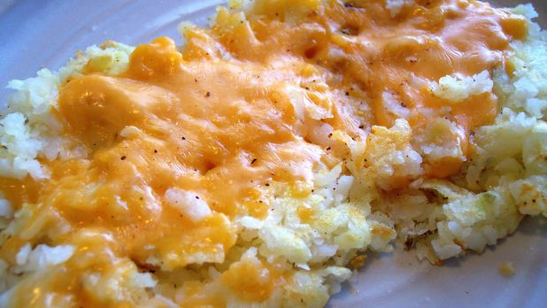

Classic Hashbrowns

Description
Simple classic potato based hashbrowns.
Quick and easy to make, a perfect breakfast item.
Ingredients
- 3-5 medium sized potatoes
- 0.5 teaspoons of salt
- 0.25 teaspoons of pepper
Steps
- Wash potatoes and then microwave until baked.
- Once baked, let potatoes cool.
- Once cooled, shred the potatoes while discarding excess peel.
- Put shredded potatoes into skillet sprayed with vegetable oil.
- Cook on medium heat until browned, while sprinkling in salt and pepper.
Return to homepage